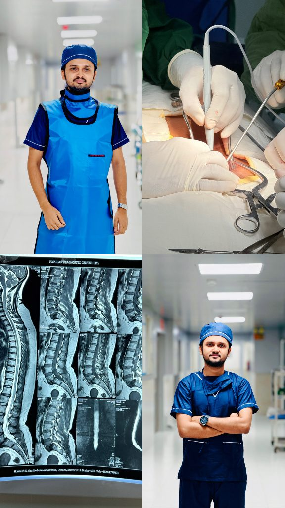
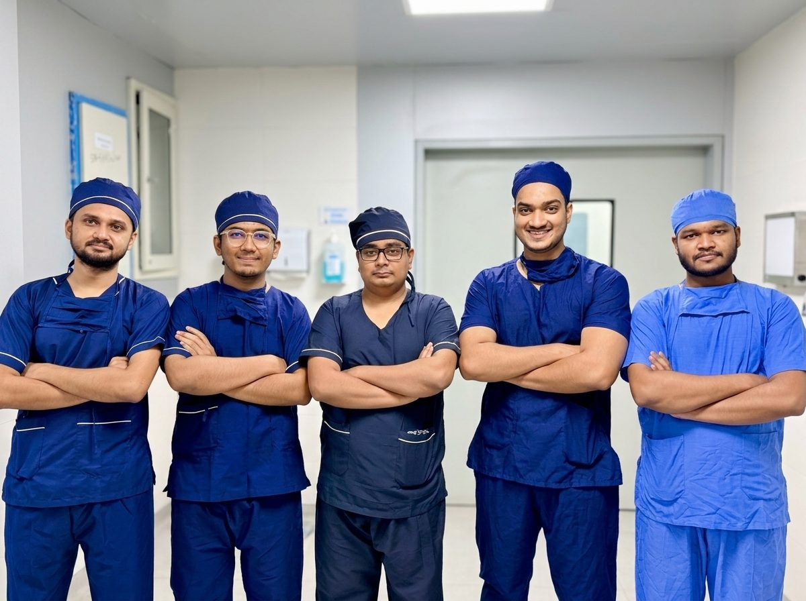
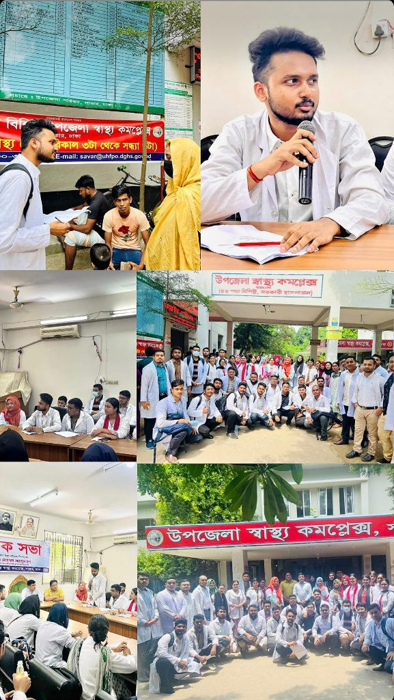

Care grounded in science. Purpose shaped by surgery.
I’m Dr. Pritom Ghosh, an MBBS graduate of the University of Dhaka—building a career in orthopaedic and spine surgery through disciplined clinical training, research, and compassionate care.
I completed my MBBS at Shaheed Monsur Ali Medical College, affiliated with the University of Dhaka, and am undertaking my mandatory internship across medicine, surgery, orthopaedics, obstetrics and gynaecology, paediatrics, and emergency services.
My approach is anchored in clinical diligence, aseptic discipline, ethical practice, and respectful patient care. Supervised theatre exposure—especially spinal surgery—has made orthopaedics and musculoskeletal care the clear direction of my postgraduate journey.
02 · Clinical exposure
Learning where precision matters.
Selected supervised operative and clinical experiences.
01

Orthopaedic spine surgery
Spondylolisthesis spinal surgery
Assisted the operating surgeon under direct supervision, gaining practical exposure to spinal instrumentation, decompression, sterile-field maintenance, electrocautery, and lead-shield radiation safety.
Observed trocar placement, pneumoperitoneum maintenance, camera navigation, Calot’s triangle dissection, electrosurgery, and coordinated operating-theatre workflow.
StageFinal-year MBBSSettingOperation Theatre 03
03

Clinical teamwork
Operating theatre intern cohort
Collaborative clinical practice alongside fellow interns, developing disciplined theatre communication, sterile workflow, and reliable team coordination.
SettingSurgical theatrePracticeTeam-based care
03 · Research
Community medicine · 2023
Research with real community context.
As group leader, I coordinated a cross-sectional study on reproductive health problems among adult women in rural Bangladesh—covering survey administration, sampling, field interviews, data synthesis, and seminar presentation.
Study designField coordinationData synthesisPresentation

270
adult female participants
Study area
Savar Upazila, Dhaka
Role
Group Leader & Co-author
Period
July–September 2023
Department
Community Medicine, SMAMC
04 · Credentials
A broad foundation for focused practice.
Formal education and post-MBBS professional development.
01
MBBS (DU)
Shaheed Monsur Ali Medical College University of Dhaka
02
CMU
Certificate in Medical Ultrasound
03
MCGP
Membership of the College of General Practitioners
04
CCD
Certificate Course on Diabetology BIRDEM Academy
05 · Curated visual gallery
Moments from the journey.
Clinical practice, collaborative learning, community research, and the study behind the findings.
Professional correspondence
Let’s start a meaningful conversation.
Open to clinical inquiries, academic collaboration, research discussions, and professional opportunities.